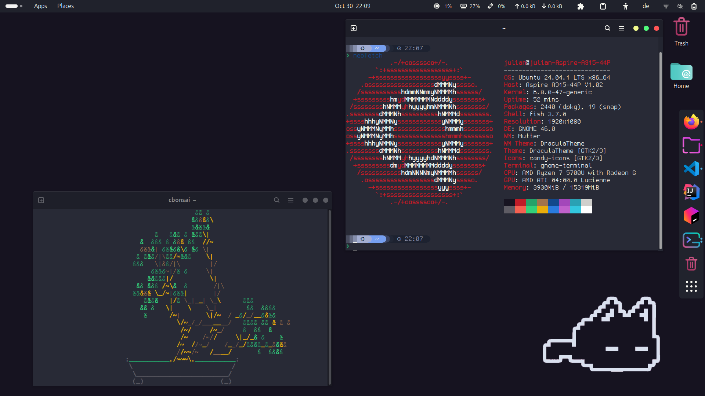

Julian (Ubuntu) Desktop Desktop Enviroment Gnome Window Manager Forge Terminal Terminal emulator Gnome-Terminal Theme Dracula Shell Configurations Fish Font Terminus Nerd Font Starship preset Tokyo Night Misc. File Manager Nautilus  Erik (Arch)